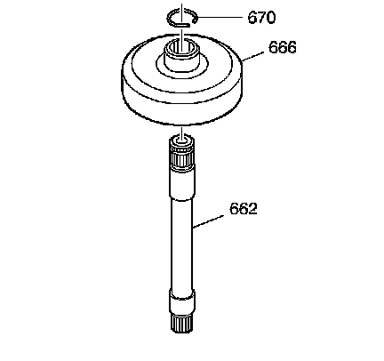
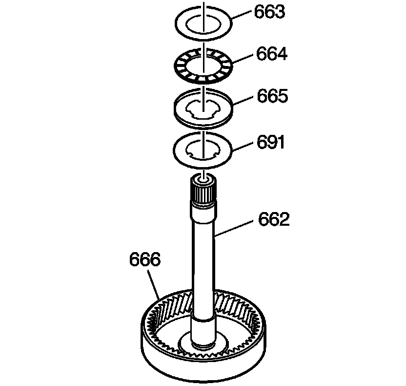
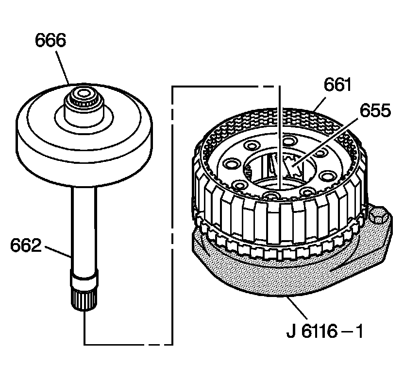
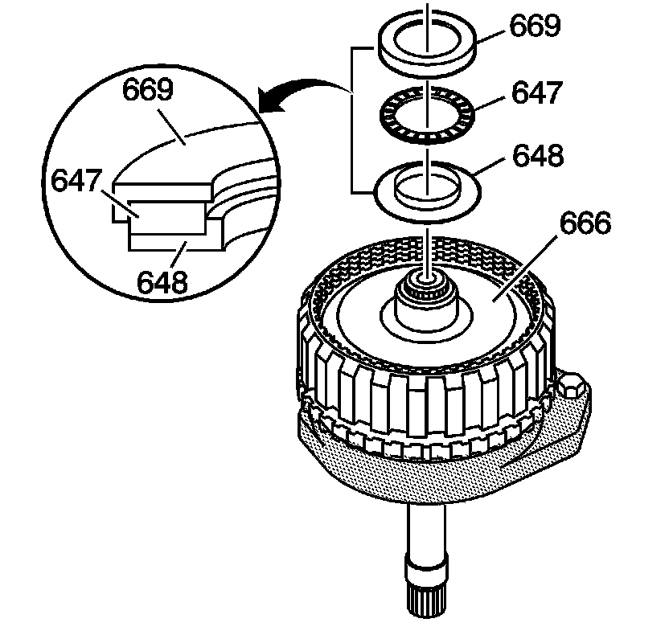
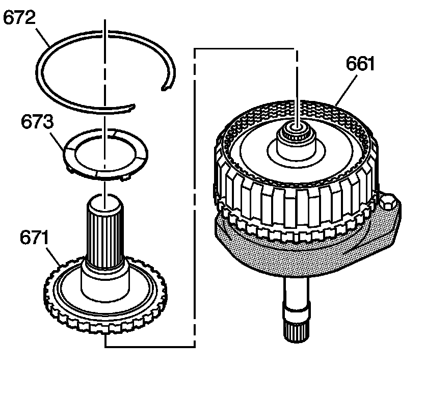
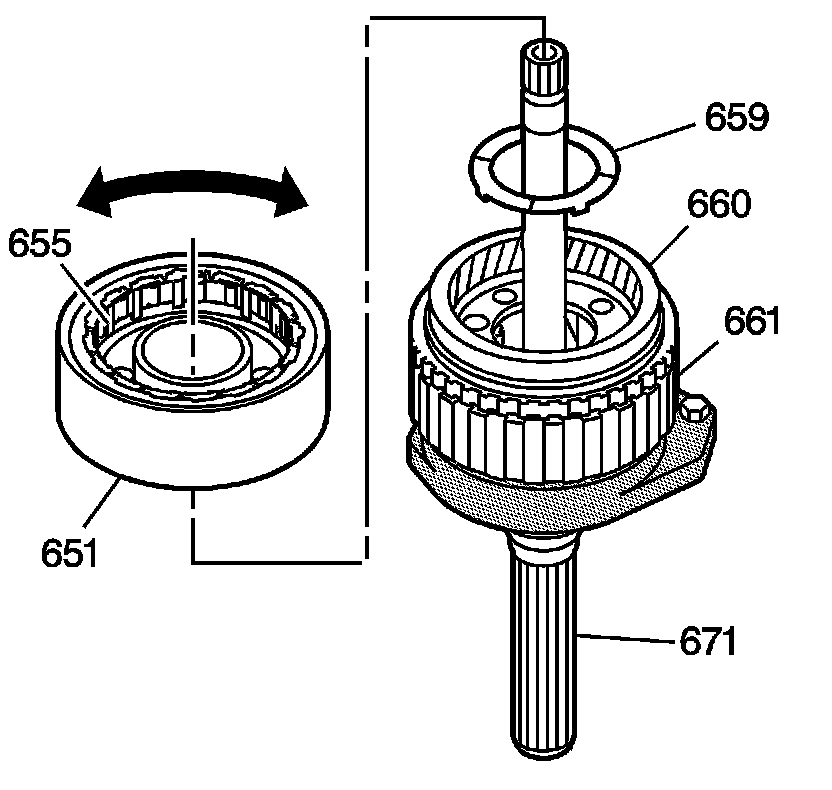
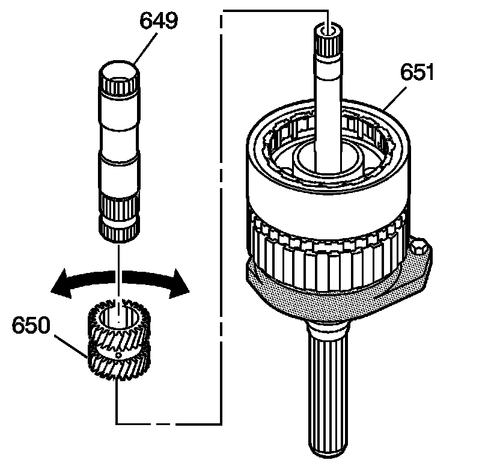
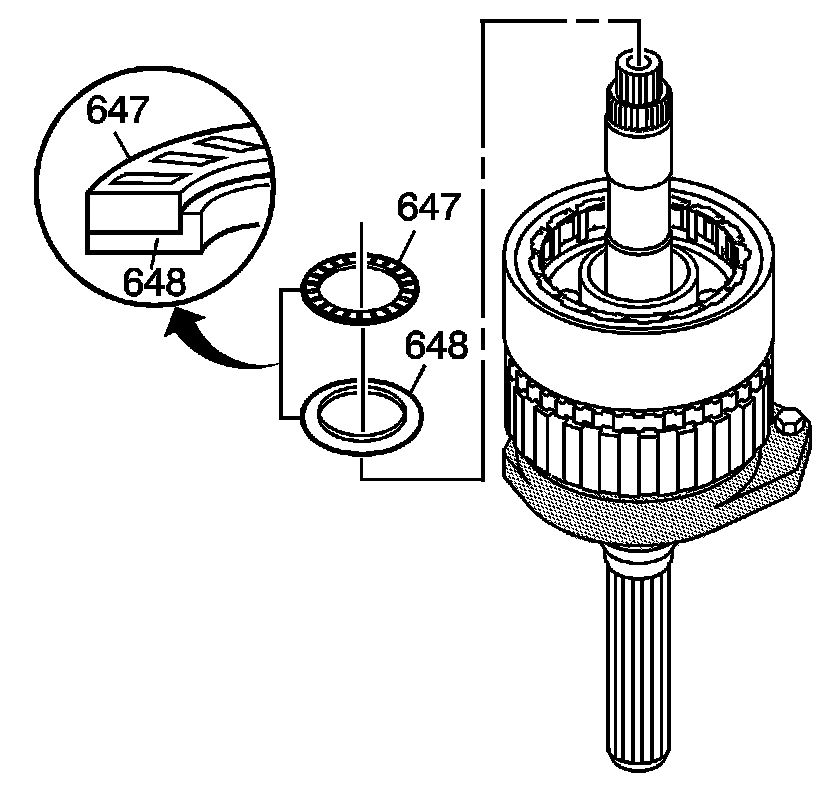
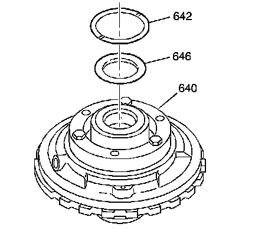
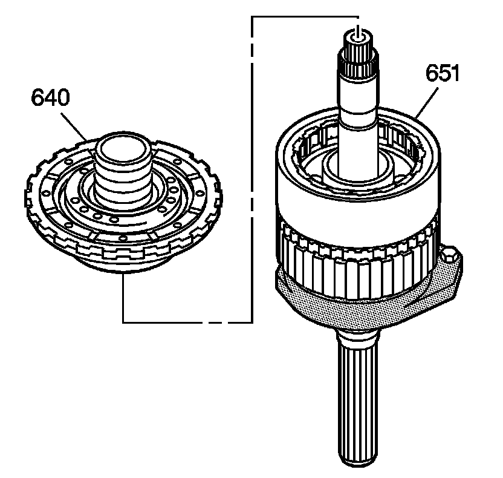

Center Support and Gear Unit Assembly Assemble
Center Support and Gear Unit Assembly Assemble
Tools Required
^ J 6116-A Rear Gear Holding Fixture
^ J 36850 Transjel(R) Lubricant

1. Insert the main shaft (662) into the rear internal gear (666).
2. Install the main shaft retainer ring (670) onto the main shaft (662).

3. Install the washer (691) onto the main shaft (662).
4. Install the sun gear rear thrust bearing assembly (664) and bearing races (663, 665) onto the main shaft (662).
5. The lips on the sun gear thrust bearing races (663, 665) should face the sun gear rear thrust bearing assembly (664).
6. Retain the washer, sun gear rear thrust bearing assembly and bearing races with J 36850 or equivalent.

7. Lubricate the output carrier pinion gears (655) with DEXRON(R)VI transmission fluid.
8. Install the main shaft (662) and the rear internal gear (666) into the output carrier assembly (661).
9. Place the assembly into the J 6116-A with the main shaft facing down.

10. Assemble the rear internal gear thrust bearing assembly (647) and races (648, 669). The lips of the sun gear thrust bearing races (648, 669) should face the rear internal gear thrust bearing assembly (647).
11. Place the bearing and race assembly onto the hub of the rear internal gear (666). Retain with J 36850 or equivalent.

12. Install the output shaft assembly (671) into the output carrier assembly (661).
13. Install the output shaft retainer ring (672).
14. Install the output shaft thrust washer (673) on the output shaft assembly (671). Align the output shaft thrust washer tabs with the pockets in the output carrier assembly.
15. Retain the thrust washer with J 36850 or equivalent.

16. Turn the gear unit assembly over and place it into the J 6116-A with the output shaft assembly (671) facing down.
17. Install the output carrier thrust washer (659) into the output carrier assembly (661).
18. Lubricate the reaction carrier pinion gears (655) with DEXRON(R)VI transmission fluid.
19. Install the reaction carrier assembly (651) into the output carrier assembly (661).
20. Rotate the reaction carrier assembly (651) to ease installation.

21. Install the sun gear (650) into the reaction carrier assembly (651).
^ Insert the chamfered inner diameter first.
^ Rotate the sun gear to ease installation.
22. Insert the sun gear shaft assembly (649) with the long splined end into the sun gear (650).

23. Install the longer-lipped sun gear front thrust bearing race (648) onto the sun gear with the lip facing upward.
24. Assemble the sun gear front thrust bearing assembly (647) onto the sun gear front thrust bearing race (648).

25. Install the sun gear front thrust bearing race (646) on the rear hub of the center support assembly (640). Retain the sun gear front thrust bearing race (646) with J 36850 or equivalent.
26. Install the reaction carrier thrust washer (642) (brass) into the recess of the center support assembly (640). Retain the reaction carrier thrust washer (642) with J 36850 or equivalent.

27. Install a new center support assembly (640), or the reconditioned center support assembly, into the reaction carrier assembly (651).
28. Verify correct installation by holding the reaction carrier assembly (651) stationary and rotating the center support assembly (640). The center support assembly (640) should only turn counterclockwise.